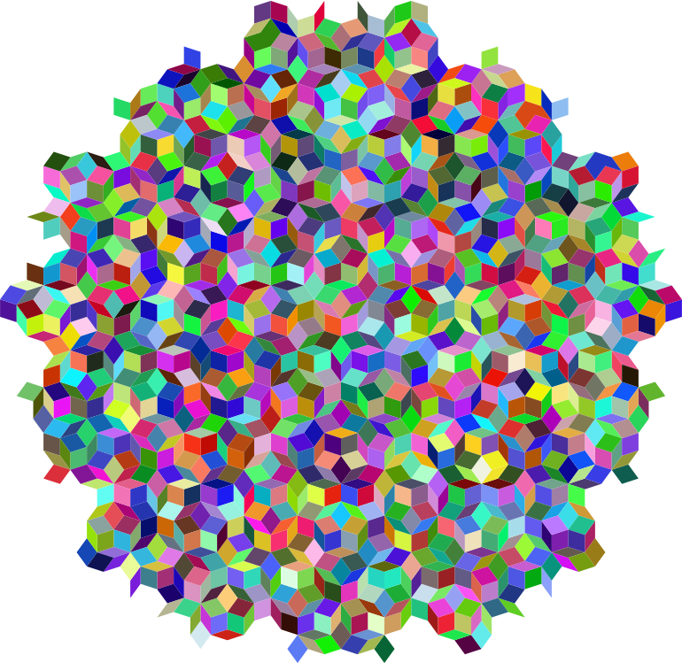

Penrose Tilings
Hi There! Welcome to my personal website. I am presently a Doctoral Candidate at Indian Institute of Technology Gandhinagar. I work on development of Force Field Parameters to describe novel residues hitherto unavailable in CHARMM parameter space. I'm presently working with Dr. Sairam Swaroop Mallajosyula at Discipline of Chemistry, IITGn; towards my doctoral degree. I am also interested in computational material science, in particular understanding the relationship between pi-electrons and topological insulators.
I enjoy teaching students, and have been unofficially tutoring M.Sc. students at my alma-mater in Quantum Mechanics and related topics, since last three years. I also teach basic programming in Python and FORTRAN to the M.Sc. students in our lab at IITGn.
Hi There! Welcome to my personal website. I am presently a Doctoral Candidate at Indian Institute of Technology Gandhinagar. I work on development of Force Field Parameters to describe novel residues hitherto unavailable in CHARMM parameter space. I'm presently working with Dr. Sairam Swaroop Mallajosyula at Discipline of Chemistry, IITGn; towards my doctoral degree. I am also interested in computational material science, in particular understanding the relationship between pi-electrons and topological insulators.
I enjoy teaching students, and have been unofficially tutoring M.Sc. students at my alma-mater in Quantum Mechanics and related topics, since last three years. I also teach basic programming in Python and FORTRAN to the M.Sc. students in our lab at IITGn.
I think I can safely say that nobody understands quantum mechanics
- Richard Feynman